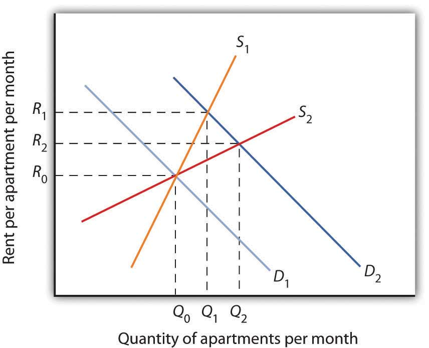
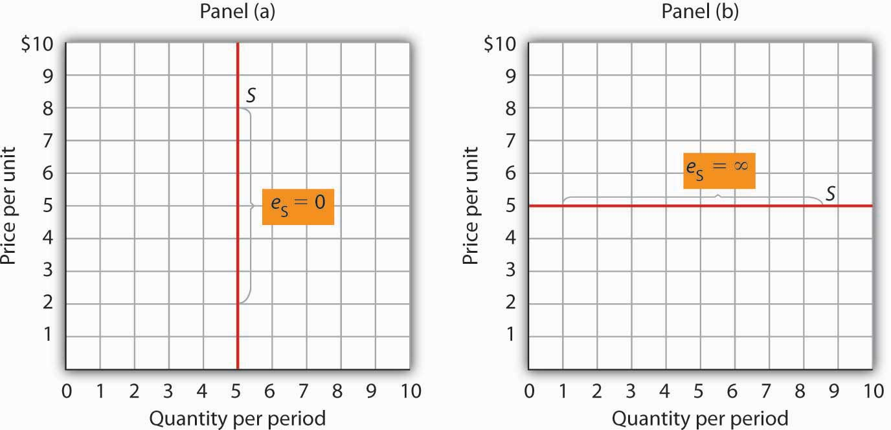

The elasticity measures encountered so far in this chapter all relate to the demand side of the market. It is also useful to know how responsive quantity supplied is to a change in price.
Suppose the demand for apartments rises. There will be a shortage of apartments at the old level of apartment rents and pressure on rents to rise. All other things unchanged, the more responsive the quantity of apartments supplied is to changes in monthly rents, the lower the increase in rent required to eliminate the shortage and to bring the market back to equilibrium. Conversely, if quantity supplied is less responsive to price changes, price will have to rise more to eliminate a shortage caused by an increase in demand.
This is illustrated in Figure 5.5 "Increase in Apartment Rents Depends on How Responsive Supply Is". Suppose the rent for a typical apartment had been R0 and the quantity Q0 when the demand curve was D1 and the supply curve was either S1 (a supply curve in which quantity supplied is less responsive to price changes) or S2 (a supply curve in which quantity supplied is more responsive to price changes). Note that with either supply curve, equilibrium price and quantity are initially the same. Now suppose that demand increases to D2, perhaps due to population growth. With supply curve S1, the price (rent in this case) will rise to R1 and the quantity of apartments will rise to Q1. If, however, the supply curve had been S2, the rent would only have to rise to R2 to bring the market back to equilibrium. In addition, the new equilibrium number of apartments would be higher at Q2. Supply curve S2 shows greater responsiveness of quantity supplied to price change than does supply curve S1.
Figure 5.5 Increase in Apartment Rents Depends on How Responsive Supply Is
The more responsive the supply of apartments is to changes in price (rent in this case), the less rents rise when the demand for apartments increases.
We measure the price elasticity of supplyThe ratio of the percentage change in quantity supplied of a good or service to the percentage change in its price, all other things unchanged. (eS) as the ratio of the percentage change in quantity supplied of a good or service to the percentage change in its price, all other things unchanged:
Equation 5.5
Because price and quantity supplied usually move in the same direction, the price elasticity of supply is usually positive. The larger the price elasticity of supply, the more responsive the firms that supply the good or service are to a price change.
Supply is price elastic if the price elasticity of supply is greater than 1, unit price elastic if it is equal to 1, and price inelastic if it is less than 1. A vertical supply curve, as shown in Panel (a) of Figure 5.6 "Supply Curves and Their Price Elasticities", is perfectly inelastic; its price elasticity of supply is zero. The supply of Beatles’ songs is perfectly inelastic because the band no longer exists. A horizontal supply curve, as shown in Panel (b) of Figure 5.6 "Supply Curves and Their Price Elasticities", is perfectly elastic; its price elasticity of supply is infinite. It means that suppliers are willing to supply any amount at a certain price.
Figure 5.6 Supply Curves and Their Price Elasticities
The supply curve in Panel (a) is perfectly inelastic. In Panel (b), the supply curve is perfectly elastic.
Time plays a very important role in the determination of the price elasticity of supply. Look again at the effect of rent increases on the supply of apartments. Suppose apartment rents in a city rise. If we are looking at a supply curve of apartments over a period of a few months, the rent increase is likely to induce apartment owners to rent out a relatively small number of additional apartments. With the higher rents, apartment owners may be more vigorous in reducing their vacancy rates, and, indeed, with more people looking for apartments to rent, this should be fairly easy to accomplish. Attics and basements are easy to renovate and rent out as additional units. In a short period of time, however, the supply response is likely to be fairly modest, implying that the price elasticity of supply is fairly low. A supply curve corresponding to a short period of time would look like S1 in Figure 5.5 "Increase in Apartment Rents Depends on How Responsive Supply Is". It is during such periods that there may be calls for rent controls.
If the period of time under consideration is a few years rather than a few months, the supply curve is likely to be much more price elastic. Over time, buildings can be converted from other uses and new apartment complexes can be built. A supply curve corresponding to a longer period of time would look like S2 in Figure 5.5 "Increase in Apartment Rents Depends on How Responsive Supply Is".
The concept of price elasticity of supply can be applied to labor to show how the quantity of labor supplied responds to changes in wages or salaries. What makes this case interesting is that it has sometimes been found that the measured elasticity is negative, that is, that an increase in the wage rate is associated with a reduction in the quantity of labor supplied.
In most cases, labor supply curves have their normal upward slope: higher wages induce people to work more. For them, having the additional income from working more is preferable to having more leisure time. However, wage increases may lead some people in very highly paid jobs to cut back on the number of hours they work because their incomes are already high and they would rather have more time for leisure activities. In this case, the labor supply curve would have a negative slope. The reasons for this phenomenon are explained more fully in a later chapter. The Case in Point in this section gives another example where an increase in the wage may reduce the number of hours of work.
In the late 1990s, it was reported on the news that the high-tech industry was worried about being able to find enough workers with computer-related expertise. Job offers for recent college graduates with degrees in computer science went with high salaries. It was also reported that more undergraduates than ever were majoring in computer science. Compare the price elasticity of supply of computer scientists at that point in time to the price elasticity of supply of computer scientists over a longer period of, say, 1999 to 2009.
Professor Sonia Bhalotra investigated the role of household poverty in child labor. Imagine a household with two parents and two children, a boy and a girl. If only the parents work, the family income may be less than an amount required for subsistence. In order to at least raise the income of the family to subsistence, will the labor of both children be added? If only one child will work, will it be the boy or the girl? How do the motivations of parents to send their children to work affect the design of policies to encourage education? Will a program that reduces school fees or improves school quality lead to more education or would a program that provides cash or food to households who send their children to school work better?
Using information on over 3,000 children in an area of rural Pakistan where their labor force participation is high, child wage labor is common, and gender differences in education and work of children prevail, Professor Bhalotra specifically estimated how changes in wages for boys and girls affect the number of hours they work. She focused on wage work outside the home because it usually involves more hours and less flexibility than, say, work on one’s own farm, which essentially rules out going to school.
She argues that if the work of a child is geared toward the family hitting a target level of income, then an increase in the wage will lead to fewer hours of work. That is, the labor supply elasticity will be negative and the labor supply curve will have a negative slope. For boys, she finds that the wage elasticity is about −0.5. For girls, she finds that the wage elasticity is about 0, meaning the labor supply curve is vertical. To further her hypothesis that the labor supply decision for boys but not for girls is compelled by household poverty, she notes that separate estimates show that the income of the family from sources other than having their children work reduces the amount that boys work but has no effect on the amount that girls work. Other research she has undertaken on labor supply of children on household-run farms provides further support for these gender differences: Girls from families that own relatively larger farms were both more likely to work and less likely to go to school than girls from households with farms of smaller acreage.
Why the gender differences and how do these findings affect drafting of policies to encourage schooling? For boys, cash or food given to households could induce parents to send their sons to school. For girls, household poverty reduction may not work. Their relatively lower level of participating in schooling may be related to an expected low impact of education on their future wages. Expectations about when they will get married and whether or not they should work as adults, especially if it means moving to other areas, may also play a role. For girls, policies that alter attitudes toward girls’ education and in the longer term affect educated female adult earnings may be more instrumental in increasing their educational attainment.
Source: Sonia Bhalotra, “Is Child Work Necessary?” Oxford Bulletin of Economics and Statistics 69:1 (2007): 29–55.
While at a point in time the supply of people with degrees in computer science is very price inelastic, over time the elasticity should rise. That more students were majoring in computer science lends credence to this prediction. As supply becomes more price elastic, salaries in this field should rise more slowly.